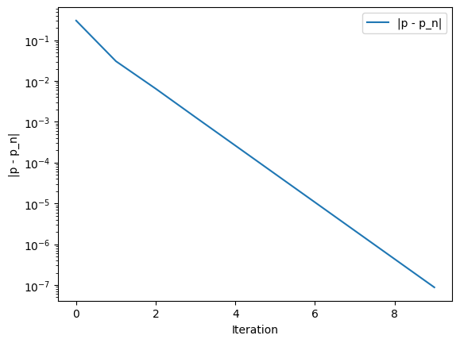
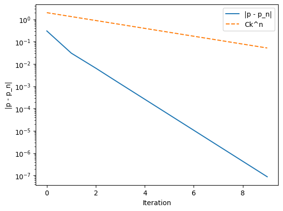
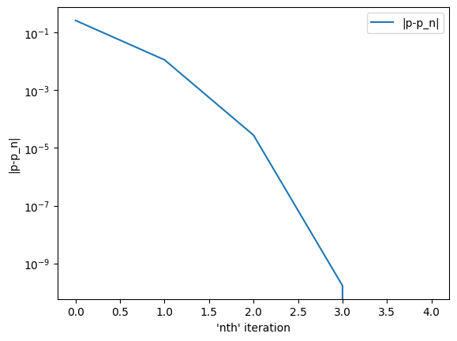
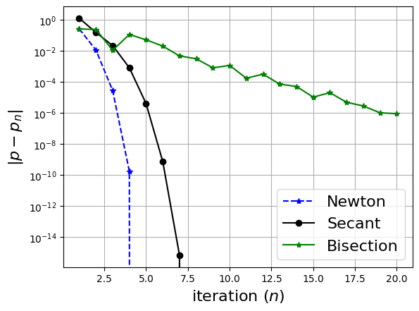

Case: Q1a Case I
Commands Run:
import CW1_solvers as cw
doc_string = cw.fixedpoint_with_stopping.__doc__
Test 1-I: doc
Student Output:
doc_string =
Using the fixed-point iteration method, this function solves the problem p = g(p)
Inputs:
----------
g: Callable[[float],float]
The function which will be iterated over
p0: float
The initial guess to the solution of p = g(p)
Nmax: integer
The maximum number of iterations over g
TOL: float
The tolerance for the stopping criteria defined as |p_m - p_(m-1)| <= TOL
p: float
The exact solution to p = g(p) if known, otherwise it is None
C: float
One of the positive constants used to define the stopping criteria |p - p_n| <= CK^n
k: float
One of the positive constants used to define the stopping criteria |p - p_n| <= CK^n
Output:
----------
p_array: np.ndarray
Containing the iterates p_n generated by the fixed point iteration before or after reaching Nmax iterations
fig,ax: matplotlib.pyplot objects of the graph of the absolute errors of |p-p_n| if p is provided.
Also outputs the plot of the error bound Ck^n if C and k are provided
Defaults to None if none of p, C or k are provided
Case: Q1a Case II
Commands Run:
import CW1_solvers as cw
g = lambda x: 1/3*(x**2 -1)
p0 = 1.0
Nmax = 10
TOL = 1e-11
p_array = cw.fixedpoint_with_stopping(g,p0,Nmax,TOL)
p_array_type = type(p_array)
p_array_shape = np.shape(p_array)
Test 1-II-1: p_array_type
Student Output:
p_array_type =
<class 'numpy.ndarray'>
Test 1-II-2: p_array_shape
Student Output:
p_array_shape =
(10,)
Test 1-II-3: p_array
Student Output:
p_array =
[ 0. -0.33333333 -0.2962963 -0.3040695 -0.30251391 -0.30282844 -0.30276498 -0.30277779 -0.3027752 -0.30277573]
Case: Q1a Case III
Commands Run:
import CW1_solvers as cw
g = lambda x: 1/3*(x**2 -1)
p0 = 1.0
Nmax = 50
TOL = 1e-11
p_array = cw.fixedpoint_with_stopping(g,p0,Nmax,TOL)
p_array_type = type(p_array)
p_array_shape = np.shape(p_array)
Test 1-III-1: p_array_type
Student Output:
p_array_type =
<class 'numpy.ndarray'>
Test 1-III-2: p_array_shape
Student Output:
p_array_shape =
(17,)
Test 1-III-3: p_array
Student Output:
p_array =
[ 0. -0.33333333 -0.2962963 -0.3040695 -0.30251391 -0.30282844 -0.30276498 -0.30277779 -0.3027752 -0.30277573 -0.30277562 -0.30277564 -0.30277564 -0.30277564 -0.30277564 -0.30277564 -0.30277564]
Case: Q1a Case IV
Commands Run:
import CW1_solvers as cw
g = lambda x: 1/3*(x**2 -1)
p0 = 1.0
Nmax = 10
TOL = 1e-11
p=(3-np.sqrt(13))/2
_,fig,ax = cw.fixedpoint_with_stopping(g,p0,Nmax,TOL,p)
figI = fig
Test1-IV: Plot
Student Output:
figI =

Case: Q1a Case V
Commands Run:
import CW1_solvers as cw
g = lambda x: 1/3*(x**2 -1)
p0 = 1.0
Nmax = 10
TOL = 1e-11
p=(3-np.sqrt(13))/2
C=2
k=2/3
_,fig,ax = cw.fixedpoint_with_stopping(g,p0,Nmax,TOL,p,C,k)
figII = fig
Test1-V: Plot
Student Output:
figII =

Case: Q1b
Commands Run:
import CW1_solvers as cw
answer = cw.show_answer(cw.q1B_answer, 60)
Test1-VI: Plot
Student Output:
answer =
Answer to Question 1b(i): Linear Answer to Question 1b(ii): It is required that g'(p) = 0 for an order of convergence that is at least quadratic. For the p calculated in part a, g'(p) =/= 0 and therefore cnanot have any order of convergence that isn't linear.
Case: Q1c
Commands Run:
import CW1_solvers as cw
answer = cw.show_answer(cw.q1C_answer, 60)
Test1-VII: Plot
Student Output:
answer =
Answer to Question 1c(i): No Answer to Question 1c(ii): Since p -> 0, then |g'(p)| = 0, but 0 < k < 1. Hence Theorem 1.6 is not invoked since we require 0 < k < 1 to exist such that |g(p)|<=k
Case: Q2a Case I
Commands Run:
import CW1_solvers as cw
f = lambda x: np.cos(x) - x
df = lambda x: -np.sin(x) - 1
p0 = 0.0
Nmax = 3
TOL = 1e-16
p_array = cw.newton_with_stopping(f,df,p0,Nmax,TOL)
p_array_type = type(p_array)
p_array_shape = np.shape(p_array)
Test 2-I-1: p_array_type
Student Output:
p_array_type =
<class 'numpy.ndarray'>
Test 2-I-2: p_array_shape
Student Output:
p_array_shape =
(3,)
Test 2-I-3: p_array
Student Output:
p_array =
[1. 0.75036387 0.73911289]
Case: Q2a Case II
Commands Run:
import CW1_solvers as cw
f = lambda x: np.cos(x) - x
df = lambda x: -np.sin(x) - 1
p0 = 0.0
Nmax = 10
TOL = 1e-16
p_array = cw.newton_with_stopping(f,df,p0,Nmax,TOL)
p_array_type = type(p_array)
p_array_shape = np.shape(p_array)
Test 2-II-1: p_array_type
Student Output:
p_array_type =
<class 'numpy.ndarray'>
Test 2-II-2: p_array_shape
Student Output:
p_array_shape =
(5,)
Test 2-II-3: p_array
Student Output:
p_array =
[1. 0.75036387 0.73911289 0.73908513 0.73908513]
Case: Q2a Case III
Commands Run:
import CW1_solvers as cw
f = lambda x: np.cos(x) - x
df = lambda x: -np.sin(x) - 1
p0 = 0.0
Nmax = 20
TOL = 1e-16
p = np.float64(0.73908513321516064165531207047)
_,fig,ax = cw.newton_with_stopping(f,df,p0,Nmax,TOL,p)
figIII = fig
Test2-III: Plot
Student Output:
figIII =

Case: Q2b
Commands Run:
import CW1_solvers as cw
answer = cw.show_answer(cw.q2B_answer, 60)
Test2-IV: Plot
Student Output:
answer =
Answer to Question 2b(i): Yes Answer to Question 2b(ii): At p=1, f(1) = 0 and f'(1) = 0. Corollary 1.2 requires that f'(p) is not equal to 0 for quadratic convergence, so the corollary doesn't apply here.
Case: Q3 Case I
Commands Run:
import CW1_solvers as cw
f = lambda x: x**2 - 2
p0 = 1.0
p1 = 2.0
Nmax = 12
TOL = 10**(-6)
p_array = cw.secant_with_stopping(f,p0,p1,Nmax,TOL)
p_array_shape = np.shape(p_array)
Test 3-I-1: p_array_shape
Student Output:
p_array_shape =
(6,)
Test 3-I-2: p_array
Student Output:
p_array =
[2. 1.33333333 1.4 1.41463415 1.41421144 1.41421356]
Case: Q3 Case II
Commands Run:
import CW1_solvers as cw
f = lambda x: x**2 - 2
p0 = 1.0
p1 = 2.0
Nmax = 12
TOL = 10**(-16)
p_array = cw.secant_with_stopping(f,p0,p1,Nmax,TOL)
p_array_shape = np.shape(p_array)
Test 3-II-1: p_array_shape
Student Output:
p_array_shape =
(8,)
Test 3-II-2: p_array
Student Output:
p_array =
[2. 1.33333333 1.4 1.41463415 1.41421144 1.41421356 1.41421356 1.41421356]
Case: Q4a Case I
Commands Run:
import CW1_solvers as cw
f = lambda x: x - np.cos(x)
df = lambda x: 1 + np.sin(x)
p0_newton = 0.0
p0_sec = 0.0
p1_sec=2.0
Nmax = 20
pe = np.float64(0.73908513321516064165531207047)
TOL = 1e-16
fig,ax = cw.plot_convergence(pe,f,df,p0_newton,p0_sec,p1_sec,Nmax,TOL)
fig4I = fig
Test4-I: Plot
Student Output:
fig4I =

Case: Q4b
Commands Run:
import CW1_solvers as cw
answer = cw.show_answer(cw.q4B_answer, 80)
Test4-2: Plot
Student Output:
answer =
Answer to Question 4b(i): Yes. f is continuous over the interval [-2,-1] and f(a)f(b) = -6 < 0. By theorem 1.1, we are guaranteed to have convergence Answer to Question 4b(ii): No. Newton's method is only guaranteed to converge if p0 lies in the interval [p-delta, p+delta] for some delta > 0. Answer to Question 4b(iii): Yes, Newton's method and the secant method fails to converge because |p-p_n| does not decrease towards 0, and instead oscillates above 0
Case: Q5a Case I
Commands Run:
import CW1_solvers as cw
doc_string = cw.scaled_pivoting.__doc__
Test 5-I: doc
Student Output:
doc_string =
Implements Gaussian elimination with scaled partial pivoting to solve the system of equations Ax=b
Inputs:
---------
A: numpy.ndarray
Represents the square matrix 'A' with shape (n,n)
b: numpy.ndarray
Represents the column vector 'b' with shape (n,1)
m: integer
Used to prematurely stop the Gaussian elimination where 1<= m <= n-1
Outputs:
----------
tildeA: numpy.ndarray
Augmented matrix arrived at by starting with tildeA = [A | b] and performing Gaussian elimination with scaled partial pivoting.
perm: numpy.ndarray
Permutation vector that records the row ordering of the original augmented matrix [A | b]
Case: Q5a Case II
Commands Run:
import CW1_solvers as cw
A = np.array([[1,-5,1],[10,0.0,20],[5,10,-1]], dtype=float)
b = np.array([[7],[6],[4]], dtype=float)
n=3
m1=1
m2=2
M1,perm1 = cw.scaled_pivoting(A,b,m1)
M1 = M1
perm1 = perm1
M2,perm2 = cw.scaled_pivoting(A,b,m2)
M2 = M2
perm2 = perm2
Test 5-II-1
Student Output:
M1 =
[[ 10. 0. 20. 6. ] [ 0. -5. -1. 6.4] [ 0. 10. -11. 1. ]]
Test 5-II-2
Student Output:
M2 =
[[ 10. 0. 20. 6. ] [ 0. -5. -1. 6.4] [ 0. 0. -13. 13.8]]
Test 5-II-3
Student Output:
perm1 =
[1 0 2]
Test 5-II-4
Student Output:
perm2 =
[1 0 2]
Case: Q5b Case I
Commands Run:
import CW1_solvers as cw
A = np.array([[1,-5,1],[10,0.0,20],[5,10,-1]], dtype=float)
b = np.array([[7],[6],[4]], dtype=float)
x = cw.sp_solve(A,b)
Test 5-III-1
Student Output:
x =
[[ 2.72307692] [-1.06769231] [-1.06153846]]
Case: Q5c
Commands Run:
import CW1_solvers as cw
answer = cw.show_answer(cw.q5C_answer, 60)
Test5-IV: Plot
Student Output:
answer =
Answer to Question 5ci: x = [-1,1,1] Answer to Question 5cii: We observe catastrophic cancellation between 1 and 1+epsilon; since we lose precision for epsilon this small, the difference is indistinguishable from 0. This is an issue when dividing by the pivot which is essentially the same as dividing by 0.